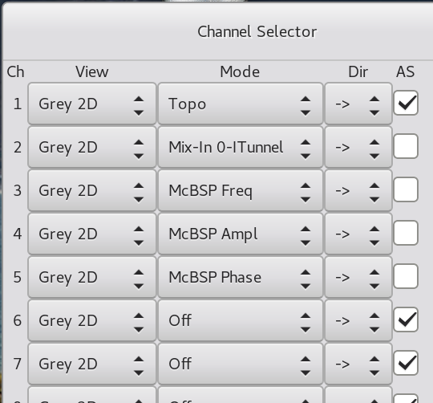

Channels {#ch:channels}
One of the most important features of Gxsm is the multichannel-capability. Multichannel-capability describes the simultaneous data acquisition and display from different sources. You may e.g. at the same time measure topography and friction-forces with the AFM. Additionally to the simultaneous acquisition of different signals, the multi-channel feature of GXSM can be used to load multiple images and, e.g. compare them, or apply more complex operations to them. Furthermore, it serves as a history mechanism during image manipulation, because the result of any mathematical operation on one channel does not overwrite it but is stored in a new channel.

The Channel Dialog {#sec:channels:dialog}
The channel dialog pops up selecting Ch. Sel. in the Windows menu of the main window. You can use it, to select the displaymode (View) and the source for data acquisition (Mode) for any channel.
One of the following modes can be chosen, see [Gxsm-Visualisation]{reference-type="ref" reference="Gxsm-Visualisation"} for details:
-
No: During data acquisition no data is displayed -- background storage/saving only. You can switch view mode any time.
-
Grey 2D: The data are displayed as a grayscaled/false-color image.
-
Surface 3D: Three/multi dimensional data/scan viewer. OpenGL (4.0 minimum) based. Can display volume data and slices of multilayered data.
-
Profile 1D: Profile view of the current or all lines.
Usually you will use the mode Grey 2D for data acquisition. If you want to see the line profiles of the actual scan line, right-click on the window of the channel, select view and activate red Profile.
For processing of data several modes are available:
-
Off or On. Off deletes the channel.
-
Active. The most important mode, it sets the active channel. All image manipulation is done using this channel. Only one channel can be Active at a time.
-
Math Channel, which stores the result of the last operation is automatically called Math.
-
X Needed for several math/image-manipulation, that need more than one source.
If you want to activate a channel for data acquisition, please select in the second column the channel name, i.e. Topo or ADC0_ITunnel. This channel will be used as a target for a scan. The toggle $->$ and $<-$ in the third column defines the scanning direction at which data are collected. Thus Topo+ means measurement of your topography during movement of your scanhead in +X direction. By choosing $2>$ or $<2$ an experimental mode is activated in which each scanline is scanned twice, i.e. this mode is used for magnetic force measurements.
Hint: Using the MK3-A810 DSP with flexible signal configuration 4 special modes can be configured to acquire any available signal. See DSP-Control.
Hint: The names of the input channels can be customized (see [ch:config]{reference-type="ref" reference="ch:config"}).